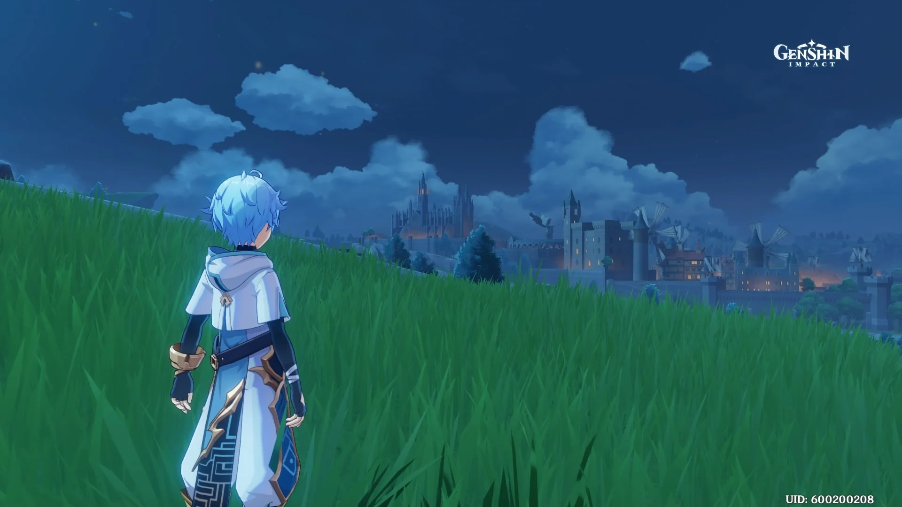
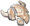

Chongyun


Chongyun
| Aniversário: | 7/9 |
|---|---|
| Afiliaçāo: | Porto de Liyue |
| Elemento: | Cryo |
| Constelaçāo: | Nubis Caesor |
| Raridade: | |
| Arma: | Espada de Duas Mãos |
Um jovem exorcista que perambula pela terra tendo Liyue como base de operações, espíritos malignos fugindo para onde quer que vá.
Como herdeiro de um clã de exorcistas, ele sempre possuiu habilidades superiores à maioria. No entanto, essas habilidades não são o
resultado do treinamento, mas de uma característica inata - positividade congênita.
Chongyun nasceu em uma família renomada de exorcistas e possuía a habilidade
natural de afastar os maus espíritos desde jovem devido à sua positividade congênita.
Seus poderes de exorcismo estão muito além do normal: sua mera presença é suficiente
para dispersar os espíritos malignos.
No entanto, isso provou ser um inconveniente para o próprio Chongyun, pois embora ele tenha empreendido centenas de exorcismos bem-sucedidos,
ele nunca viu um único fantasma ou demônio.
Chongyun acredita que um verdadeiro exorcista deve exorcizar o mal com encantos e esgrima. Essa habilidade natural que ele tem ...
simplesmente não é ortodoxa.

Por isso, tem se dedicado ao estudo de técnicas de exorcismo e artes marciais, além de buscar os esconderijos de espíritos malignos para se provar
um exorcista profissional e competente mesmo sem sua condição física peculiar.
Com Liyue como sua base de operações, o exorcista Chongyun vagueia pela terra, livrando-a do mal. Como herdeiro de um clã de exorcistas,
ele sempre possuiu habilidades superiores à maioria. No entanto, essa habilidade não é o resultado do treinamento, mas de uma característica
inata que ele chamou de "positividade congênita".
A positividade congênita é uma fisiologia extremamente rara que torna o corpo suscetível ao aquecimento devido a uma superabundância de energia positiva.
Se não for verificado, aqueles que possuem tal forma podem facilmente tornar-se sangue quente. Chongyun é um caso particularmente sério, suas mudanças de
humor são explosivas e ele não se lembra de nada de tais episódios. No entanto, a condição de Chongyun também é seu maior trunfo, pois tudo o que ele precisa
fazer para expulsar os espíritos malignos é sentar-se um pouco em qualquer canto escuro que eles possam assombrar.
Como tal, o caminho de Chongyun como exorcista foi tão tranquilo quanto pode ser. No entanto, ele mesmo não aprova essa maneira de fazer as coisas.
Em seu coração honesto e reto, apoiar-se em sua fisiologia única para exorcizar o mal é apenas um truque barato. Um exorcista deve, em sua avaliação,
cumprir seus deveres com as artes de um exorcista.

Têcnica de Favonius
Ataque Normal
Ataque Normal:
Realiza até 5 golpes rápidos.
Ataque Carregado:
Consome certa quantidade de Stamina para lançar um inimigo ao ar usando o poder do vento. Inimigos lançados cairão lentamente ao chāo.
Ataque Profundo:
Mergulha do ar para atingir o chāo abaixo, causando Dano aos inimigos ao longo do caminho e causando AdE Dano no impacto.
| Dano de 1º Golpe | 48.3% |
|---|---|
| Dano de 2º Golpe | 45.6% |
| Dano de 3º Golpe | 65.3% |
| Dano de 4º Golpe | 65.9% |
| Dano de 5º Golpe | 79.2% |
| Dano de Ataque Carregado | 162% |
| Consumo de Stamina de Ataque Carregado | 20 |
| Dano Durante a Queda | 63.9% |
| Dano de Queda de Alta/Baixa Altitude | 128% / 160% |

Espada do Temporal
Habilidade Elemental
Canalizando o poder do vento sem forma em volta da sua espada, Jean libera uma miniatura de uma tempestade, lançando inimigos na direçāo em que ela mira, causando um Dano Anemo massivo.
Manter Pressionado
Ao custo de um consumo constante de Stamina, Jean pode comandar um turbilhāo que suga inimigos próximos à sua frente. A direçāo pode ser controlada. O personagem fica imóvel durante a duraçāo da habilidade.
Aquilo que segue Jean, a defensora convicta, e um vento guardiāo que pode expulsar o perigo da presença de seus companheiros.
| Dano de Habilidade | 292% |
|---|---|
| Consumo de Stamina | 20 por segundo |
| Duraçāo Máxima | 5s |
| Tempo de Recarga | 6s |
Brisa de Dandelion
Explosāo Elemental
Invocando a proteçāo do vento, Jean cria um Campo Dandelion rodopiante, lançando inimigos ao redor e causando Dano Anemo Ao mesmo tempo, ela regenera instantaneamente uma grande quantidade de Vida para todos os membros da equipe. A vida restaurada dimensiona o ATQ de Jean.
Campo Dandelions
Regenera continuamente a Vida de um aliado e os ativam atributo Anemo. Causa Dano Anemo aos inimigos que entram ou saem do campo.
A magnanimidade de Jean é tāo vasta quanto os Dandelions, e é a raiz de seu desejo de proteger os outros.
| Dano da Explosāo | 425% |
|---|---|
| Dano de Entrada e Saída da Área | 78.4% |
| Cura de Ativaçāo de Área | 251% do atq + 154/s |
| Regeneraçāo Contínua | 25.12% atq + 154/s |
| Tempo de Recarga | 20s |
| Energia Elemental | 80 |
Companhia do Vento
Desbloqueado na Ascensão 1
Ao acertar Ataques Normais, possui 50% de chance de regenerar a Vida equivalente a 15% do ATQ de Jean para todos os membros da Equipe.

Deixe o Vento Levar
Desbloqueado na Ascensão 4
Após usar a Brisa de Dandelion regenera 20% de Energia Elemental
Brisa de Planagem
Desbloqueado Automaticamente
Quando uma Culinária Perfeita é feita em uma comida com efeito de recuperaçāo, tem uma chance de 12% de receber o dobro de produção.
Tempestade Espiral
Constelaçāo Nível 1
Aumenta a velocidade da Espada do Temporalapós manter pressionado por mais de 1s e aumenta o dano causando 40%.

Égide do Povo
Constelaçāo Nível 2
Quando a Jean pega um Orbe/Partícula Elemental, todos os membros terāo sua Veloc. Mov. e VEL de ATQ aumentados em 15% por 15s.

Quando o Vento do Oeste SOpra
Constelaçāo Nível 3
class="lead" Aumenta o nível da Brisa de Dandeliona em 3. O nível máximo de atualização é 15.

Terra dos Dandelions
Constelaçāo Nível 4
Dentro do Campo criado pela Brisa de Dandeliona, todos os inimigos têm sua RES Anemo diminuída em 40%

Rajada Explosiva
Constelaçāo Nível 5
Aumente o Nível da Espada do Temporal em 3. O nível máximo de atualização é 15.
Presa do Leāo, Protetor de Mondstadt
Constelaçāo Nível 6
Dano recebido é reduzido em 35% dentro da Área criada por Brisa de Dandelion. Após sair do Campo de Dandelions, este efeito dura por 3 ataques ou 10 segundos.
Suporte Build de Anemo
Esta construção capacita a Explosāo Elemental da Jean para maximizar sua cura, enquanto simultaneamente reduz o RES Elemental dos inimigos para o resto do seu grupo.
Arma:
The Flute

Ataques normais ou carregados concedem harmônicos aos acertos. Ganhar 5 Harmônicas ativa o poder da música e distribui 100/125/150/175/200% Dano de ATQ para os inimigos ao redor. Os harmônicos duram até 30s e um máximo de 1 pode ser obtido a cada 0,5s.
Conjuntos de Artefatos:
Noblesse Oblige
(2) Dano da Explosão elementar + 20%
(4) Usando a Explosão elementar, aumente o ATQ de todos os membros do grupo em 20% por 12s. Este efeito não pode ser acumulado.
| Ascensão | Max Lv. |  |
Material Elemental 1 | Material Elemental 2 | Especialidade Local | Material Comum |
|---|---|---|---|---|---|---|
| 1st | 20 | 20,000 | Prata de Jade Shivada x1 |
Nenhum | Cor Lapis x3 |
 Máscara Danificada x3 |
| 2nd | 40 | 40,000 | Fragmento de Jade Shivada x3 |
Núcleo de Geada x2 |
Cor Lapis x10 |
Máscara Danificada x15 |
| 3rd | 50 | 60,000 | Fragmento de Jade Shivada x6 |
Núcleo de Geada x4 |
Cor Lapis x20 |
Máscara Suja x12 |
| 4th | 60 | 80,000 |  Pedaço de Jade Shivada x3 |
Núcleo de Geada x8 |
Cor Lapis x30 |
Máscara Suja x18 |
| 5th | 70 | ? | Pedaço de Jade Shivada x6 |
Núcleo de Geada x12 |
Cor Lapis x45 |
Máscara Ominosa x16 |
| 6th | 80 | ? | Gema de Jade Shivada x6 |
Núcleo de Geada x20 |
Cor Lapis x60 |
Máscara Ominosa x24 |
| Máximo | 90 | Max | Max | Max | Max | Max |